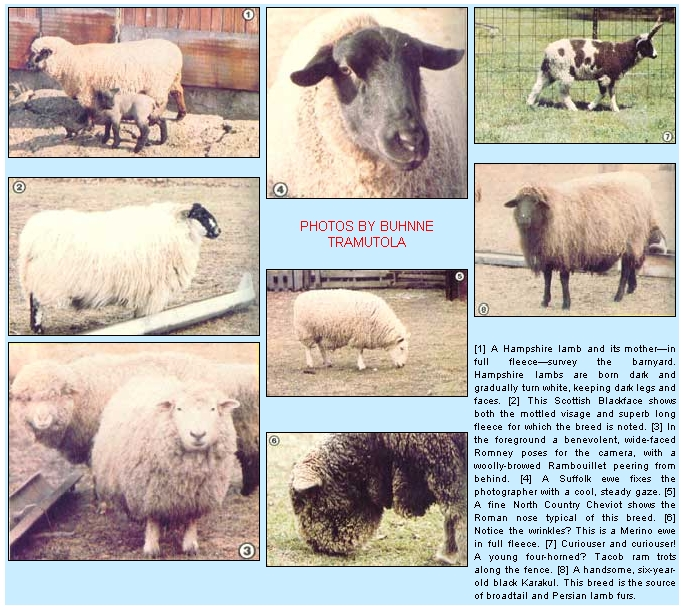

Whether you want wool, meat or milk, you'll find the right sheep in our vet's rundown on...
Randy Kidd, D.V.M.
All the evidence available to us today indicates that the association between humans and sheep goes back to prehistoric times. Of course, there's little doubt that many a wild ram and ewe wound up in the bellies of Neanderthal hunters . . . and surviving records-in the form of testaments, artwork, and such-show that primitive pastoral peoples used domesticated sheep for wool, skins, milk, and tallow as well as for meat. For example, an early Egyptian sculpture shows sheep being driven across a freshly sown field in the Nile Valley, apparently so their hoofs could press the seeds into the soil. Furthermore, wool was used as clothing material by the Babylonians at least 4,000 years before the birth of Christ. All in all, then, we've been together a long time.
And-over those centuries-if humankind has affected the development of sheep, sheep have, in turn, affected the development of nations. In England, the wool industry flourished until, by the sixteenth century, it had become the chief source of revenue for the Crown. While Spain (to give a more dramatic example) refused to give up its monopoly on Merino sheep-the secret of that country's lucrative wool export industry-to the point that Spanish law actually specified the death penalty for anyone found guilty of exporting a live Merino!
In recent years wool has been largely supplanted by synthetic fibers, and only one-third of today's American sheep raisers derive their income from the sale of fleece. Nevertheless, wool finds its way into some of the finest (and often most costly) articles on the market . . . it's still incomparable for warmth, durability, versatility, and beauty.
Happily enough, the increasing interest in homesteading and in handmade, homespun apparel and furnishings has caused a lot of people to take a second look at sheep . . . finding them to be practical small-farm livestock and a source of easily handled, unusual wools. And whether a person wants animals for meat or wool, a backyard flock can be one of the most economical components of a self-reliant homestead.
The breeds listed below include some of the most popular (as well as a few not so popular) types of sheep in the United States. Naturally, this article can be only an overview, and anyone who is inspired to consider acquiring a flock should make a thorough study of the breeds that seem most appropriate to his or her purpose . . . before making a purchase.
CLASSIFICATION
Sheep can be grouped in any of several ways: by their suitability as meat producers, by the length or quality of their wool, by their face color, or by their adaptation to different altitudes. Probably the most useful kind of grouping is classification by wool grades . . . which has gone through its own evolution over the years. The most modern method uses the micron (1/25,000 inch) as a standard, and then rates wool by the average diameter of the fibers in a given lot: The finer the wool, then, the smaller the micron number.
The micron system appears to be more technically accurate than its predecessors (such as the formerly popular "count" system, for instance, which classed wool by the number of hanks that could be spun from a pound), and there is some effort being made to establish it as the standard for describing wools in the United States. Few people, however, have a "feel" for micron measurement, so the sheep listed here are simply categorized as having fine, medium, or long wool.
FINE-WOOLED BREEDS
The fine-wooled breeds in the U.S. include the American Merino, Delaine Merino, Rambouillet, and Debouillet. Like the Spanish Merino from which they're all descended, these varieties are noted for fine, tightly crimped wool that has a heavy, greasy covering called "yolk". (When refined, this combination of secretions from the sebaceous and sweat glands becomes the smooth, oily product we call lanolin.)
In recent years the meatmaking capabilities of these breeds have been improved, but if you're looking to put lamb chops on the table, there are better meat types available. On the other hand, though, ewes of the fine-wooled types will often breed out of season ... a definite advantage for the owner who's interested in maximum productivity.
MERINO. No other breed has contributed more to the development of other sheep types than has the Merino. Early examples of this breed had thick wrinkles along their entire bodies, a characteristic that breeders later discovered produced wool of inferior quality. Now called "type A", these sheep are rarely seen today, having given way to the less wrinkled varieties known as "type B" and the virtually wrinkle-free "type C", or Delaine Merinos.
All three varieties are hardy, long-lived, and possessed of a strong flocking instinct. Their fleece is super-fine and therefore difficult for any but an experienced spinner to manage, but it does make up into very high-quality yarns.
RAMBOUILLET. The Rambouillet, a direct descendant of the Spanish Merino, is the largest of the fine-wooled breeds. The animals are commonly used in crossbreeding programs . . . and it's been estimated that at least 50% of all the sheep in the U.S. have some Rambouillet blood in their background. (The Debouillet, for example, is a Delaine/Rambouillet cross.)
Rambouillets are considered dual-purpose (meat and wool) sheep. They have superior long, dense, fine wool that's very popular for spinning. Most rams of the breed sport large spiral horns, but some strains are polled (hornless).
MEDIUM-WOOLED BREEDS
The most popular medium-wooled breeds include the Cheviot and North Country Cheviot, Montadale, Dorset, Tunis, Hampshire, Oxford, Shropshire, Suffolk, and Southdown. (The last five examples in this list are sometimes called the "Down" breeds, a reference to the hills and downs of southern England which were their place of origin.)
All of the medium-wooled sheep were developed for meat, and their fleece is rated somewhere between the extreme fineness and density of the Merino and the coarseness and "open" quality typical of the long-wooled sheep. Most of these breeds have dark faces and dark legs.
SOUTHDOWN. The smallest (and oldest) of the Down types, the Southdown is said to produce the finest mutton of any sheep. Its compact, wide, deep body type was used as the foundation stock for all the other Down breeds. The young reach market weight quickly . . . however, the ewes-which are just average milkers-are not prolific. Southdown wool is relatively short and can be used to make a fine (thin) yarn.
SHROPSHIRE. The original Shropshires had a wool "cap" extending down to the muzzle, but because this contributed to an ailment known as "wool blindness", breeders have worked to develop a clean-faced variety. Long-lived, hardy, and prolific, Shropshires have the heaviest fleece of the mutton types, but it tends to be short and varies in quality from fine to medium grade.
OXFORD. The largest of the medium-wooled sheep, Oxfords are the result of crossing Hampshires and Cotswolds (both described below) in the mid-1800's. Oxford lambs are large (9 to 12 pounds) at birth and therefore reach market weight early.
HAMPSHIRE. A very popular breed, used extensively for crossbreeding, Hampshires are heavy milkers and often produce twins. The lambs are born dark and gradually turn white, keeping dark legs and faces.
Because of their large size (second only to that of the Oxford in the Down group), Hampshires need good pasture and feed, and won't thrive if left to forage on poor ground. The ewes sometimes experience lambing problems because of the large head and shoulders typical of the young ones.
SUFFOLK. The thin, black-faced, black-legged look indicative of the Suffolk strain can be seen in many of the crossbred sheep raised on our western ranges. Unlike the Hampshires, Suffolk lambs have small heads and shoulders and thus give little trouble at lambing time. Members of the breed are active foragers, too, and their meat has less fat and finer texture than does that of most other medium-wooled breeds.
DORSET. Both the rams and ewes of the original Dorset breed had massive horns. Recently, however, a polled strain has been developed. Dorsets will breed out of season . . . are noted milkers . . . and are active, thrifty foragers.
CHEVIOT. With its distinctive white face, erect ears, Roman nose, and small size, the Cheviot is easy to identify. This hardy breed originated in the rugged hills of Scotland, and is quite suitable for small farms. Furthermore, Cheviots produce a medium-grade fleece which is prized by many spinners because it doesn't need carding.
NORTH COUNTRY CHEVIOT. Larger than the original Cheviot, the North Country strain is also calmer in temperament. The fleece of this interesting "new" breed is of medium grade and excellent for spinning.
MONTADALE. Montadales originated in America-as a result of crossbreeding Cheviots and Columbias-in 1932. They are an attractive and hardy dual-purpose, intermediate-sized sheep . . . with good-quality medium fleece.
TUNIS. Easily recognized by its red or tan face and pendulous ears, the Tunis originated in North Africa. Like some other desert sheep, it has fatty tissue in its tail, and can call on that stored energy when forced to go without food for extended periods. Popular in the South, the Tunis was nearly wiped out during the Civil War but staged a comeback in the late 1890's. It's now once again growing in popularity.
LONG-WOOLED BREEDS
The long-wooled breeds-the Cotswolds, Border Leicester, Lincoln, and Romney, for example-were developed primarily for mutton. They are typically the largest sheep (225- to 350-pound rams and 175- to 275-pound ewes are common). Their wool is generally very long, open, and coarse (it's frequently used in carpets, wall hangings, and outerwear), and heavy rains may cause the fleece to part and allow the sheep to get wet to the skin. When that happens, the wool is undamaged, but the animals sometimes become ill as a result of their drenching. These strains tend to mature slowly and are likely to become fatty, but their large size often makes them desirable for crossbreeding.
COTSWOLD. One of the oldest breeds, the Cotswold has a tuft of hair on its forehead and long, lustrous wool with natural curls, which many spinners find pleasant to work with.
BORDER LEICESTER. Developed in the border country between England and Scotland, the Border Leicester has the erect ears and Roman nose of the Cheviot . . . with wool averaging between 8 and 12 inches long. The fleece is coarse, and has considerable luster.
LINCOLN. The Lincolns are the heavyweights of sheepdom and also grow the heaviest fleece-up to 30 pounds from one ram-which is usually from 10 to 15 inches long (one Lincoln produced a record 32-inch-long coat!), lustrous, long-wearing, and difficult to card. These animals are somewhat sluggish and slow to mature, but they add size and staple (a term for fiber length and diameter) to other breeds when used for crossbreeding.
ROMNEY. In full fleece, Romneys are noted for their beautiful faces and beautiful coats. Unlike that of some other "long" varieties, their wool is relatively fine, dense, and much desired by hand-spinners because it doesn't need carding. Romneys are quiet, particularly resistant to foot problems, and known for high milk production.
CROSSBRED TYPES
Breeds such as the Columbia, Corriedale, and Targhee are the result of attempts to produce larger ewes that'll yield more wool and heavier market lambs than do other types. Their fleece is usually of medium to fine quality, and many such breeds have adapted well to western U.S. range conditions.
COLUMBIA. This strain was developed from a Lincoln/Ram-bouillet cross in the early 1900's. It's a tight-flocking, dual-purpose sheep that does well on range or farm.
CORRIEDALE. A New Zealand breed resulting from a cross between Lincoln and Merino sheep, Corriedales generally produce more pounds of wool and lamb per pound of ewe body weight than does any other range type. They're fairly prolific, adequate milkers, and tight herders . . . producing wool that's noted for its brightness, softness, distinct crimp, and ease of handling. This is another fleece type that can be worked without carding.
TARGHEE. Targhees (so called after the national forest of the same name) are an American breed that was developed in Idaho back around 1926. They're prolific (often having twins or triplets), large, and resistant to both internal parasites and hoof problems. Their ancestors are the Lincoln, Rambouillet, and Corriedale.
OTHER BREEDS TO PONDER
SCOTTISH HIGHLAND (OR BLACKFACE). Members of this very old Scottish breed are among the most common sheep in Britain today. They tend to be small, horned, and oddly mottled with black on their faces and legs. Highland fleece is very long (15 to 18 inches) and quite springy. It's used to make carpets, tweeds, and mattress stuffing. The sheep also produce excellent mutton.
FINNSHEEP. Multiple births are this breed's claim to fame . . . the ewes may have litters of anywhere from three to seven lambs! Finnsheep are fine-boned and medium-sized, and they produce a very lustrous, light fleece that spins well.
KARAKUL. This is the only true black sheep . . . since all the other dark types are mutations of various white breeds. Karakuls are the source of broadtail, Persian lamb, and half-Persian furs (those terms refer to the pelts of lambs at various stages of growth). Adult Karakul sheep have long, coarse outer hair with a fine undercoat. Usually born black, they do lighten in color as they age, and may turn to any of various shades of brown, blue, gray, or even white.
NAVAJO. The Navajo is quite possibly a descendant of the Spanish Jacob (or Piebald) sheep. The breed hasn't been standardized and therefore occurs in a wide range of sizes, shapes, colors . . . and number of horns: The rams may have from one to four!
BARBADOS. The Barbados Blackbellies (see the article in MOTHER NO. 65, page 38) are "hair" sheep with practically no wool. A long "cape" around the neck and shoulders does have fibers that can be spun, however. Barbados are used in crossbreeding to add hardiness, multiple births, and-important for handspinners-color variety. The sheep will also breed out of season.
YOU'RE ON YOUR OWN
Improvements are continually being made in established breeds, while new strains are being developed all the time to meet the needs of today's farmers and ranchers. As you'd imagine, then, this article can't do justice to all the varieties available . . . but it might just serve to break ground for those homesteaders whose back-to-basics lifestyle has made them ready for a long-term relationship with one of humanity's oldest-and most valuable-associates.
EDITOR'S NOTE: There are many good books available on sheep, including the interesting and unusual Adventures in Fleece, by Buhnne Tramutola. This self-published looseleaf notebook has data on more than 40 breeds . . . with pictures and actual fleece samples for each one. Also included are the names and addresses of associations, breeding farms, fleece merchants, mills, and shops . . . plus many odd bits of information for the enthusiast. It's available for $22 (postpaid) from the author . . . write her at Dept. TMEN, Highway 31 North, Clinton, New Jersey 08809.
|
 |
|
|